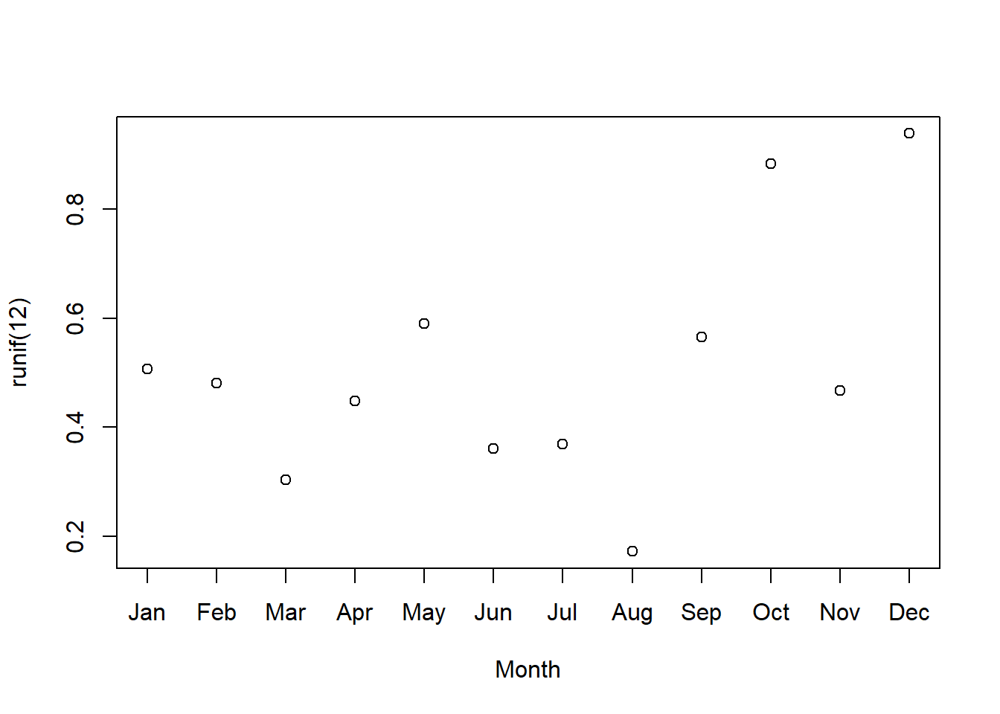
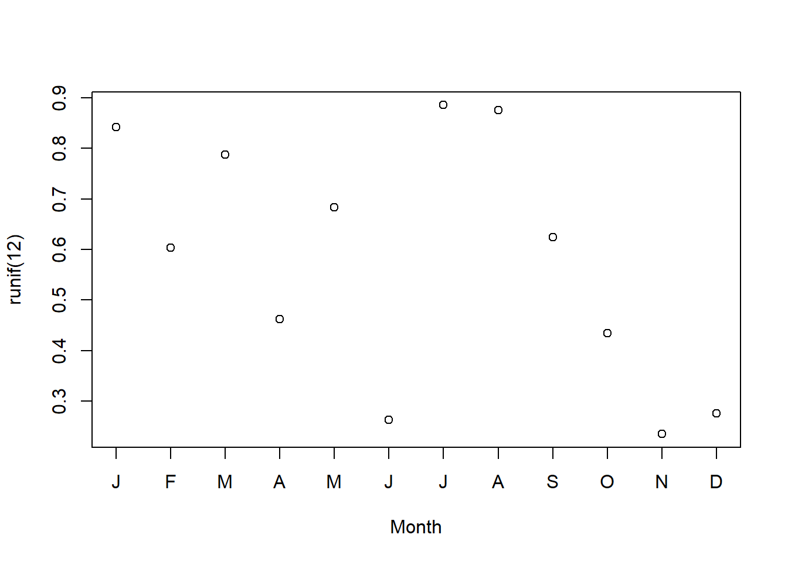

a <- c("aardvark", "bunny", "caterpillar")
a[1] "aardvark" "bunny" "caterpillar"In R, data are stored in objects with a well-defined structure. The structures of these objects can facilitate manipulating and retrieving your data. The structure of an R object is determined by its class. The format of data (i.e., the kinds of values contained in an object) is referred to as the data type. Most R users only encounter types when trying to understand error messages. This is because many R functions will return errors if their inputs are not of the correct type.
Character data are text strings. They are input and printed using quotation marks (""). Note that straight quotes are used. No other kind of quotation mark is valid in R code. If you paste in text from another program that has “curly quotes” (e.g., from Word), you will get an error.
a <- c("aardvark", "bunny", "caterpillar")
a[1] "aardvark" "bunny" "caterpillar"Notice that in the command above the values in a are defined in quotation marks. Without quotation marks, R would interpret those words as the names of objects. For example:
caterpillar <- "lion"
c("aardvark", "bunny", caterpillar)[1] "aardvark" "bunny" "lion" There are some special character vectors pre-built into R that can be useful in programming: letters returns the lower case letters a-z, while LETTERS returns the upper-case letters A-Z.
letters
## [1] "a" "b" "c" "d" "e" "f" "g" "h" "i" "j" "k" "l" "m" "n" "o" "p" "q" "r" "s"
## [20] "t" "u" "v" "w" "x" "y" "z"
LETTERS
## [1] "A" "B" "C" "D" "E" "F" "G" "H" "I" "J" "K" "L" "M" "N" "O" "P" "Q" "R" "S"
## [20] "T" "U" "V" "W" "X" "Y" "Z"
letters[11:20]
## [1] "k" "l" "m" "n" "o" "p" "q" "r" "s" "t"Similarly, month.name and month.abb contain the names of the 12 months and their 3 letter abbreviations, respectively. The latter is very useful for making figure axes.
plot(1:12, runif(12), xaxt="n", xlab= "Month")
axis(side=1, at=1:12, labels=month.abb)
As an aside, the function substr() extracts parts of character strings (“substring”). One application is getting one letter abbreviations of the months for a figure axis. The example below selects from the month names starting and ending at character 1. The argument xaxt="n" in plot() suppresses the x-axis, so we can add our own with axis().
use.months <- substr(month.name, 1, 1)
plot(1:12, runif(12), xaxt="n", xlab= "Month")
axis(side=1, at=1:12, labels=use.months)
Most data are stored as the numeric type. This includes floating point numbers (e.g., 3.14159 or 3.14e0). Floating point numbers are referred to as type “double” in R (short for “double-precision floating point”).
typeof(2)[1] "double"typeof(pi)[1] "double"Integers are numbers with no fractional components. Some numbers are stored as integers, but integers are not always interchangeable with floating point numbers. For example, some probability distribution functions return integer values rather than floating point values (e.g., binomial or Poisson). This can be problematic if very large numbers are expected because the maximum integer value in R is much smaller than the maximum floating-point value. Note that having the type integer in R and being an integer from a mathematical standpoint are not synonymous.
# numbers are double by default:
typeof(7)
## [1] "double"
# convert to integer with as.integer():
typeof(as.integer(7))
## [1] "integer"
# test whether input is integer type:
is.integer(7)
## [1] FALSE
# test whether input is numeric type:
is.numeric(7)
## [1] TRUE
# some functions return integer type as output:
typeof(rbinom(1, 10, 0.7))
## [1] "integer"
# 7 is mathematically an integer (7 mod 1 == 0),
# but is not of integer type in R
7 %% 1
## [1] 0Integers are used as indices for subsetting and accessing other objects. A sequence of integers can be made using the colon operator as follows:
a <- 1:10
a
## [1] 1 2 3 4 5 6 7 8 9 10
typeof(a)
## [1] "integer"An important consequence of using integers as index values is that object dimensions are limited to the R integer limit. This is probably not a major concern for most users. Your machine will likely run out of memory before you could make such an object anyway. You can check the integer limit on your machine with this line:
.Machine$integer.max[1] 2147483647On my machine, this is about 2.14 × 109. If you need data objects with dimensions larger than this, you may need to either use a specialized R package that can handle huge objects, or you may need rethink what you are doing.
The logical data type stores TRUE and FALSE values. Note that TRUE and FALSE are always written in capital letters, without quotation marks. Logical values are produced by logical tests, such as the test for equality using ==:
1+1 == 2
## [1] TRUE
typeof(1+1 == 2)
## [1] "logical"
typeof(1+1 == 3)
## [1] "logical"Another useful test you can do is to test whether elements of one set are in another:
5 %in% 1:10
## [1] TRUE
5 %in% 6:10
## [1] FALSE
1:10 %in% 5:15
## [1] FALSE FALSE FALSE FALSE TRUE TRUE TRUE TRUE TRUE TRUEYou can test with inequalities:
2 >= 1
## [1] TRUE
3 < 2
## [1] FALSESometimes it can be useful to store logical values as 1 or 0. You can do this by multiplying a logical by 1 or using function as.numeric.
1*(1+1 == 2)
## [1] 1
1*(1+1 == 3)
## [1] 0
typeof(1+1 == 2)
## [1] "logical"
typeof(1*(1+1 == 2))
## [1] "double"
typeof(as.numeric(1+1 == 1:5))
## [1] "double"The ! symbol negates or reverses logical values. It does not negate logical values stored as numbers.
2+2 == 4
## [1] TRUE
! 2+2 == 4
## [1] FALSE
1:10 %in% 5:15
## [1] FALSE FALSE FALSE FALSE TRUE TRUE TRUE TRUE TRUE TRUE
!1:10 %in% 5:15
## [1] TRUE TRUE TRUE TRUE FALSE FALSE FALSE FALSE FALSE FALSEThe any() and all() functions test to see if any values in a set of logical values is true (any()) or if all of them are true (all()).
1:5 < 3
## [1] TRUE TRUE FALSE FALSE FALSE
any(1:5 < 3)
## [1] TRUE
all(1:5 < 3)
## [1] FALSETRUE and FALSE can also be abbreviated as uppercase T or F, but not lowercase t or f. This means that you should not create objects with names T, F, TRUE, etc. (don’t name an object t either, because that is the name of the transpose function). The code block below illustrates the mischief that can be created by naming an object T and masking the built-in value for true.
# (1+1==2) is true.
T == (1+1==2)
## [1] TRUE
# make a new object T with value 3
T <- 3
# (1+1==2) is now not true, unless it is
T == (1+1==2)
## [1] FALSE
TRUE == (1+1==2)
## [1] TRUE
# remove the troublesome T
rm(T)
# things are back to normal
T == (1+1==2)
## [1] TRUENAMissing data in R are labeled as NA, or “Not Available”. This is R-speak for a blank or missing value. Some functions can ignore NA, some cannot. Some functions produce NA when you supply them with improper inputs. Note that this is a feature, not a bug. R is set up to produce NA by default in many cases to help you track down where the missing values are coming from. Function is.na() tests to see if a value is missing.
aa <- c(1:8,NA)
aa + 2
## [1] 3 4 5 6 7 8 9 10 NA
# returns NA
mean(aa)
## [1] NA
# option to ignore NA values
mean(aa,na.rm=TRUE)
## [1] 4.5
# test for NA
is.na(aa)
## [1] FALSE FALSE FALSE FALSE FALSE FALSE FALSE FALSE TRUE
# which elements are NA?
which(is.na(aa))
## [1] 9
# remove NA elements
aa[-which(is.na(aa))]
## [1] 1 2 3 4 5 6 7 8
# another way to remove NA elements
aa[which(!is.na(aa))]
## [1] 1 2 3 4 5 6 7 8
# returns NA: Poisson distribution supported only on [0,+Inf]
rpois(10,-2)
## [1] NA NA NA NA NA NA NA NA NA NAPositive and negative infinity (\(+\infty\) and \(-\infty\)) are labeled in R as Inf and –Inf. Dividing a non-zero number by 0 produces Inf. Taking the log of 0 produces –Inf. Trying to generate a value greater than R’s maximal value can produce Inf.
5/0
## [1] Inf
log(0)
## [1] -Inf
10^10^10
## [1] InfSome values that are undefined are labeled NaN (not a number). This means that a value is undefined, not that it is missing (which would be NA) or infinite (which would be Inf or -Inf). Dividing 0 by 0, or taking the log of a negative number, produces NaN. The function is.nan() tests to see if a value is NaN.
0/0
## [1] NaN
log(-1)
## [1] NaNWhy are there so many special values? Often they are meant to help track down where erroneous values are coming from. If every undefined value returned the same symbol (or word, etc.), then it would be harder to know why a program was returning undefined values. Instead, the different results help point the way:
Inf: Positive non-zero number divided by 0-Inf: Negative non-zero number divided by 0 or log(0).NaN: 0/0 or logarithm of a negative numberIn R, data are stored in objects with a well-defined structure. The structures of these objects can facilitate manipulating and retrieving your data. The structure of an R object is determined by its class. The format of data (i.e., the kinds of values contained in an object) is referred to as the data type.
For a solid introduction to R classes and data types, refer to An introduction to R, one of the official R help manuals. The book Data manipulation with R (Spector 2008) is also good. If you want to explore the odder and less benign aspects of R data structures, I recommend the truly excellent The R Inferno (accessed 2025-08-06).
In R, as in mathematics, a vector is an ordered set of values. Vectors are a key concept in statistics and linear algebra. For example, the set \([1,2,3,4,5]\) is a vector. This vector is different than the set (and vector) \([2,3,1,5,4]\). These sets are different vectors because even though they contain the same values, those values are in different orders. In R we could call either of those sets a “vector”. Note that we don’t call them “lists” because a list is a special kind of object in R that is not synonymous with vector.
As a language designed primarily for statistics, R has a strong emphasis on vectors and their manipulation. Vectors are probably the simplest type of data object in R. Understanding them is the key to understanding other data objects in R.
Another way to think of vectors is as an array with one dimension, length. In computing, an “array” is a systematic arrangement of similar elements. An array with 1 dimension is a vector. A two-dimensional array is a matrix, and an array with \(\ge\) 3 dimensions is just called an array. Vectors, matrices, and arrays in R can be a convenient way to store structured data that are all of the same type (numeric, logical, character, etc.).
Vectors can be created by the function vector() as well as by functions specific to the type of value to be stored. The most common types are numeric, logical, and character. These hold numbers, logical values, and text, respectively. Each type has a default value (0, FALSE, and "" (blank), respectively). Notice that in each command below R prints the results to the console because the resulting vectors are not assigned to an object.
vector("numeric", 5)
## [1] 0 0 0 0 0
vector("logical", 5)
## [1] FALSE FALSE FALSE FALSE FALSE
vector("character",5)
## [1] "" "" "" "" ""
# equivalent to above commands:
numeric(5)
## [1] 0 0 0 0 0
logical(5)
## [1] FALSE FALSE FALSE FALSE FALSE
character(5)
## [1] "" "" "" "" ""Creating vectors this way is cumbersome, but useful when programming complex tasks. It is usually more efficient, from a memory usage standpoint, to create an object and fill it later than to create it and repeatedly change its size.
You can also create vectors by defining their contents. When you do this, R will guess at the type of vector based on the values you give it. These guesses are usually okay.
# numeric:
class(runif(10))
## [1] "numeric"
# integer, which is stored in numeric vectors
# despite being a different type:
class(1:5)
## [1] "integer"
is.numeric(1:5)
## [1] TRUEVectors can also be made by putting values together using the function c() (short for “combine” or “concatenate”). Note that if you try to combine values of different types, R will convert all values to character strings.
# create a vector of numbers
my.vec <- c(1,2,4:8,10)
my.vec
## [1] 1 2 4 5 6 7 8 10
# create a vector of character strings
my.vec2 <- c("zebra","hippo","lion","rhino","rhino")
my.vec2
## [1] "zebra" "hippo" "lion" "rhino" "rhino"
# create a vector with 1 numeric, 1 character,
# and 1 logical value...all are converted to
# character strings.
my.vec3 <- c(1,"hippo",1+1==3)
my.vec3
## [1] "1" "hippo" "FALSE"Each value within a vector is called an element. Elements of a vector are accessed by the bracket notation.
# get some random numbers
a <- runif(5)
# print to console
a
## [1] 0.4225946 0.4273200 0.6980133 0.7493878 0.3909880
# 3rd element
a[3]
## [1] 0.6980133
# elements 2-4
a[2:4]
## [1] 0.4273200 0.6980133 0.7493878
# elements other than 1
a[-1]
## [1] 0.4273200 0.6980133 0.7493878 0.3909880
# elements other than 1 and 2
a[-c(1:2)]
## [1] 0.6980133 0.7493878 0.3909880You can inspect a vector (or any object) by printing it to the console. Do this by typing the object’s name into the console at the command prompt > and pressing ENTER.
my.vec[1] 1 2 4 5 6 7 8 10The [1] at the start of the line with your results indicates that that line starts with the first element of the object. If an object runs over to multiple lines, each line will begin with the index of the first value printed on that line. Make your console window narrower and try this command:
runif(20) [1] 0.9644274 0.8511006 0.9895011 0.7160127 0.1957198 0.7670751 0.4925316
[8] 0.4955673 0.5171900 0.9543227 0.1688985 0.3357372 0.8523162 0.2212228
[15] 0.2548527 0.1388119 0.6838656 0.5356243 0.8549563 0.4098636Each element of a vector can have a name, set or accessed using the function names(). Element names can even be used to access elements of a vector.
a <- runif(3)
names(a) <- c("value1", "value2", "value3")
names(a)
## [1] "value1" "value2" "value3"
a
## value1 value2 value3
## 0.4607700 0.6086813 0.6623285
a["value3"]
## value3
## 0.6623285Vectors can be extended using c() or by changing their length. Changing the length of a vector can also shorten it. If a vector is made longer than the number of values it has, the extra elements will be filled in with NA, which is the label R uses for blanks.
# make a numeric vector of length 8
b <- 1:8
# combine it with another value to
# increase length to 9
b <- c(b, 10)
b
## [1] 1 2 3 4 5 6 7 8 10
# remake our vector with length 8
b <- 1:8
# set its length to 10
length(b) <- 10
# gaps filled with NA
b
## [1] 1 2 3 4 5 6 7 8 NA NA
# remake our vector with length 8
b <- 1:8
# change length to 6 (shorter)
length(b) <- 6
# vector truncated
b
## [1] 1 2 3 4 5 6As mentioned elsewhere, many R functions take vectors as input and use them one element at a time. This is very handy when working with data, because you will often need to perform the same operation on every observation. Like any R data object, you can use a vector in a function simply by using the name in place of the values:
my.vec <- 1:8
my.vec*2
## [1] 2 4 6 8 10 12 14 16
mean(my.vec)
## [1] 4.5
dpois(my.vec, lambda=5)
## [1] 0.03368973 0.08422434 0.14037390 0.17546737 0.17546737 0.14622281 0.10444486
## [8] 0.06527804A final note about vectors: some R functions, help pages, and error messages refer to “atomic vectors”. These are any object type whose elements cannot be split (i.e., “atomic” in the way Democritus meant the word). For example, the scalar 2 is considered atomic, being a numeric vector of length 1 whose sole element cannot be split up into something smaller. Likewise, the vector 2:3 is also atomic, because neither of its elements (2 and 3) can be split up into small elements. This definition extends to arrays with \(\geq3\) dimensions.
a <- 4
a
## [1] 4
is.atomic(a)
## [1] TRUEa <- runif(10)
a
## [1] 0.25647812 0.84368977 0.97534988 0.65817838 0.39059280 0.95288864
## [7] 0.02810212 0.58745817 0.27662509 0.82801144
is.atomic(a)
## [1] TRUEa <- matrix(1:6, ncol=3)
a
## [,1] [,2] [,3]
## [1,] 1 3 5
## [2,] 2 4 6
is.atomic(a)
## [1] TRUEa <- array(1:12, dim=c(3,2,2))
a
## , , 1
##
## [,1] [,2]
## [1,] 1 4
## [2,] 2 5
## [3,] 3 6
##
## , , 2
##
## [,1] [,2]
## [1,] 7 10
## [2,] 8 11
## [3,] 9 12
is.atomic(a)
## [1] TRUEOn the other hand, a list is not atomic but rather recursive. This means that any of its elements can be another list. Consider the following:
a <- list(x=1:12, y="a", z=list(m=t.test(rnorm(20)), n="a"))
a
## $x
## [1] 1 2 3 4 5 6 7 8 9 10 11 12
##
## $y
## [1] "a"
##
## $z
## $z$m
##
## One Sample t-test
##
## data: rnorm(20)
## t = 0.14488, df = 19, p-value = 0.8863
## alternative hypothesis: true mean is not equal to 0
## 95 percent confidence interval:
## -0.3708162 0.4259706
## sample estimates:
## mean of x
## 0.02757718
##
##
## $z$n
## [1] "a"is.atomic(a)
## [1] FALSE
is.recursive(a)
## [1] TRUEThe list a is recursive because any of its elements could be another list. However, consider the list b:
b <- list(x=1, y=2, z=3)
b
## $x
## [1] 1
##
## $y
## [1] 2
##
## $z
## [1] 3is.atomic(b)
## [1] FALSE
is.recursive(b)
## [1] TRUENote that while every element of b is atomic in and of itself (satisfying the definition of an atomic object above), b is in fact recursive. This is because any element of b, could be a list like b. This is a bit paradoxical, but not enough to cause any trouble.
Why do I bring this up? Because it is very easy to provoke the dreaded, operator invalid for atomic vectors error. This usually means you are trying to treat a non-list as a list.
# make a simple matrix
a <- matrix(1:4, nrow=2)
colnames(a) <- c("a", "b")
a a b
[1,] 1 3
[2,] 2 4# not run, but try on your machine
# incorrect: using $ to extract from an atomic vector
# (in this case a matrix)
a$a# correct: using column names and []
a[,"a"][1] 1 2Atomic vectors can contain 1 and only one type of data: logical, integer, double, character, complex, and raw.
Most of the time when you work with data in R, you will work with objects of the data frame class. A data frame looks and acts a lot like a spreadsheet. One key aspect of data frames is that data frames can store data of more than one type, while vectors, matrices, and arrays cannot. The examples below use the built-in data frame iris.
Each row of a data frame usually corresponds to one observation. Each column contains the values of one variable. You can access data frame columns by name with the $ operator:
iris$Sepal.Length [1] 5.1 4.9 4.7 4.6 5.0 5.4 4.6 5.0 4.4 4.9 5.4 4.8 4.8 4.3 5.8 5.7 5.4 5.1
[19] 5.7 5.1 5.4 5.1 4.6 5.1 4.8 5.0 5.0 5.2 5.2 4.7 4.8 5.4 5.2 5.5 4.9 5.0
[37] 5.5 4.9 4.4 5.1 5.0 4.5 4.4 5.0 5.1 4.8 5.1 4.6 5.3 5.0 7.0 6.4 6.9 5.5
[55] 6.5 5.7 6.3 4.9 6.6 5.2 5.0 5.9 6.0 6.1 5.6 6.7 5.6 5.8 6.2 5.6 5.9 6.1
[73] 6.3 6.1 6.4 6.6 6.8 6.7 6.0 5.7 5.5 5.5 5.8 6.0 5.4 6.0 6.7 6.3 5.6 5.5
[91] 5.5 6.1 5.8 5.0 5.6 5.7 5.7 6.2 5.1 5.7 6.3 5.8 7.1 6.3 6.5 7.6 4.9 7.3
[109] 6.7 7.2 6.5 6.4 6.8 5.7 5.8 6.4 6.5 7.7 7.7 6.0 6.9 5.6 7.7 6.3 6.7 7.2
[127] 6.2 6.1 6.4 7.2 7.4 7.9 6.4 6.3 6.1 7.7 6.3 6.4 6.0 6.9 6.7 6.9 5.8 6.8
[145] 6.7 6.7 6.3 6.5 6.2 5.9You can also access data frame columns by number or name with bracket notation:
iris[,1]
## [1] 5.1 4.9 4.7 4.6 5.0 5.4 4.6 5.0 4.4 4.9 5.4 4.8 4.8 4.3 5.8 5.7 5.4 5.1
## [19] 5.7 5.1 5.4 5.1 4.6 5.1 4.8 5.0 5.0 5.2 5.2 4.7 4.8 5.4 5.2 5.5 4.9 5.0
## [37] 5.5 4.9 4.4 5.1 5.0 4.5 4.4 5.0 5.1 4.8 5.1 4.6 5.3 5.0 7.0 6.4 6.9 5.5
## [55] 6.5 5.7 6.3 4.9 6.6 5.2 5.0 5.9 6.0 6.1 5.6 6.7 5.6 5.8 6.2 5.6 5.9 6.1
## [73] 6.3 6.1 6.4 6.6 6.8 6.7 6.0 5.7 5.5 5.5 5.8 6.0 5.4 6.0 6.7 6.3 5.6 5.5
## [91] 5.5 6.1 5.8 5.0 5.6 5.7 5.7 6.2 5.1 5.7 6.3 5.8 7.1 6.3 6.5 7.6 4.9 7.3
## [109] 6.7 7.2 6.5 6.4 6.8 5.7 5.8 6.4 6.5 7.7 7.7 6.0 6.9 5.6 7.7 6.3 6.7 7.2
## [127] 6.2 6.1 6.4 7.2 7.4 7.9 6.4 6.3 6.1 7.7 6.3 6.4 6.0 6.9 6.7 6.9 5.8 6.8
## [145] 6.7 6.7 6.3 6.5 6.2 5.9
iris[,"Petal.Width"]
## [1] 0.2 0.2 0.2 0.2 0.2 0.4 0.3 0.2 0.2 0.1 0.2 0.2 0.1 0.1 0.2 0.4 0.4 0.3
## [19] 0.3 0.3 0.2 0.4 0.2 0.5 0.2 0.2 0.4 0.2 0.2 0.2 0.2 0.4 0.1 0.2 0.2 0.2
## [37] 0.2 0.1 0.2 0.2 0.3 0.3 0.2 0.6 0.4 0.3 0.2 0.2 0.2 0.2 1.4 1.5 1.5 1.3
## [55] 1.5 1.3 1.6 1.0 1.3 1.4 1.0 1.5 1.0 1.4 1.3 1.4 1.5 1.0 1.5 1.1 1.8 1.3
## [73] 1.5 1.2 1.3 1.4 1.4 1.7 1.5 1.0 1.1 1.0 1.2 1.6 1.5 1.6 1.5 1.3 1.3 1.3
## [91] 1.2 1.4 1.2 1.0 1.3 1.2 1.3 1.3 1.1 1.3 2.5 1.9 2.1 1.8 2.2 2.1 1.7 1.8
## [109] 1.8 2.5 2.0 1.9 2.1 2.0 2.4 2.3 1.8 2.2 2.3 1.5 2.3 2.0 2.0 1.8 2.1 1.8
## [127] 1.8 1.8 2.1 1.6 1.9 2.0 2.2 1.5 1.4 2.3 2.4 1.8 1.8 2.1 2.4 2.3 1.9 2.3
## [145] 2.5 2.3 1.9 2.0 2.3 1.8Rows of a data frame are accessed by number with bracket notation. As seen above, you can also select using logical tests.
iris[1,]
## Sepal.Length Sepal.Width Petal.Length Petal.Width Species
## 1 5.1 3.5 1.4 0.2 setosa# not run because output very long; try it on your machine!
iris[which(iris$Species == "setosa"),]Unlike matrices, rows and columns of data frames are something different. This is because under the surface, a data frame is really a list, and what looks like a column of a data frame is really an element of the list. So, a row of a data frame is really a new data frame with one row. When you work with data frames in R, the data frame class and its associated methods offer a convenient way to interact with the underlying list structure.
class(iris[1,])
## [1] "data.frame"
class(iris[,1])
## [1] "numeric"Practically, this means that if you select a column from a data frame you get a vector, and if you select a row (or rows) you get another data frame. So, if you want to operate on values within a row, you might need to use an apply() function.
mean(iris[1,1:4]) # apply function needed
## [1] NA
apply(iris[1,1:4], 1, mean) # works!
## 1
## 2.55
sum(iris[1,1:4]) # works!
## [1] 10.2Columns can be added to data frames by assigning them a value:
iris2 <- iris # Make a spare copy
iris2$petal.area <- iris2$Petal.Length*iris2$Petal.WidthYou can view the first few rows of a data frame with the command head(), and the last few rows with the command tail(). These are incredibly useful!
head(iris2)
## Sepal.Length Sepal.Width Petal.Length Petal.Width Species petal.area
## 1 5.1 3.5 1.4 0.2 setosa 0.28
## 2 4.9 3.0 1.4 0.2 setosa 0.28
## 3 4.7 3.2 1.3 0.2 setosa 0.26
## 4 4.6 3.1 1.5 0.2 setosa 0.30
## 5 5.0 3.6 1.4 0.2 setosa 0.28
## 6 5.4 3.9 1.7 0.4 setosa 0.68
tail(iris2)
## Sepal.Length Sepal.Width Petal.Length Petal.Width Species petal.area
## 145 6.7 3.3 5.7 2.5 virginica 14.25
## 146 6.7 3.0 5.2 2.3 virginica 11.96
## 147 6.3 2.5 5.0 1.9 virginica 9.50
## 148 6.5 3.0 5.2 2.0 virginica 10.40
## 149 6.2 3.4 5.4 2.3 virginica 12.42
## 150 5.9 3.0 5.1 1.8 virginica 9.18Columns can be removed from a data frame by assigning them a value of NULL.
iris2$petal.area <- NULL
head(iris2) Sepal.Length Sepal.Width Petal.Length Petal.Width Species
1 5.1 3.5 1.4 0.2 setosa
2 4.9 3.0 1.4 0.2 setosa
3 4.7 3.2 1.3 0.2 setosa
4 4.6 3.1 1.5 0.2 setosa
5 5.0 3.6 1.4 0.2 setosa
6 5.4 3.9 1.7 0.4 setosaWe’ll explore more aspects of data frames in Chapter 5.
Sometimes you have a structured set of values that does not need to be stored as a data frame, or should not be stored as a data frame for ease of access. These situations call for matrices and arrays.
An array with two dimensions is a matrix. The dimensions of a matrix are its rows and columns. Matrices look a little like data frames, but internally they are very different. Unlike a data frame and like all arrays, a matrix can contain values of only one type. Matrices are necessary for any matrix operations (e.g., Leslie matrices) and for some function inputs. For most routine data analyses, data frames are easier to work with.
Matrices are created with the matrix() function. The matrix function must be provided with the values, the dimensions of the matrix, and the method for filling (by rows or by columns). If you don’t know the values yet, you can just use NA or 0.
my.mat1 <- matrix(1:12,nrow=3,ncol=4)
my.mat1
## [,1] [,2] [,3] [,4]
## [1,] 1 4 7 10
## [2,] 2 5 8 11
## [3,] 3 6 9 12
my.mat2 <- matrix(1:12,nrow=3,ncol=4,byrow=TRUE)
my.mat2
## [,1] [,2] [,3] [,4]
## [1,] 1 2 3 4
## [2,] 5 6 7 8
## [3,] 9 10 11 12
my.mat3 <- matrix(NA,nrow=3,ncol=4)
my.mat3
## [,1] [,2] [,3] [,4]
## [1,] NA NA NA NA
## [2,] NA NA NA NA
## [3,] NA NA NA NAJust as with other objects, the values in a matrix can be extracted using bracket notation. Because matrices have two dimensions, you must specify indices for both dimensions. This is done using a comma , to separate the row indices and column indices within the brackets. Just as with data frames, row indices are before the comma; column indices are after the comma. Leaving the row index or the column index blank will select all rows or columns, respectively.
my.mat1[2,1]# row 2, column 1
## [1] 2
my.mat1[3,3]# row 3, column 3
## [1] 9Entire rows or columns of a matrix can be extracted by leaving the other dimension blank. You must still include the comma within the brackets. Notice that both the rows and columns of a matrix are vectors, not a matrix. If you want to get a row or column as a 1 row or 1 column matrix, you must specifically request this.
# first row
my.mat1[1,]
## [1] 1 4 7 10
is.matrix(my.mat1[1,])
## [1] FALSE
# third column
my.mat1[,3]
## [1] 7 8 9
# convert extracted part to matrix
my.mat3 <- matrix(my.mat1[1,], nrow=1)
is.matrix(my.mat3)
## [1] TRUEAn array in R is usually only called an array if it has \(\ge\) 3 dimensions. Data stored this way can make programming easier, if there is a clear relationship between the dimensions. Arrays are not often encountered by the average user. The example below has 3 “layers”, each of which has 4 rows and 2 columns.
my.array <- array(1:24,dim=c(4,2,3))
my.array, , 1
[,1] [,2]
[1,] 1 5
[2,] 2 6
[3,] 3 7
[4,] 4 8
, , 2
[,1] [,2]
[1,] 9 13
[2,] 10 14
[3,] 11 15
[4,] 12 16
, , 3
[,1] [,2]
[1,] 17 21
[2,] 18 22
[3,] 19 23
[4,] 20 24One very nifty (and potentially confusing) ability of arrays is the ability to be sliced into differently shaped pieces1. Consider the examples below and see if you can work out why the results are what they are.
my.array[,,1]
## [,1] [,2]
## [1,] 1 5
## [2,] 2 6
## [3,] 3 7
## [4,] 4 8
my.array[,1,]
## [,1] [,2] [,3]
## [1,] 1 9 17
## [2,] 2 10 18
## [3,] 3 11 19
## [4,] 4 12 20
my.array[1,,]
## [,1] [,2] [,3]
## [1,] 1 9 17
## [2,] 5 13 21
my.array[1,2,]
## [1] 5 13 21
my.array[,2,1:2]
## [,1] [,2]
## [1,] 5 13
## [2,] 6 14
## [3,] 7 15
## [4,] 8 16One of the most important kinds of R object is the list. A list can be thought of like a series of containers or buckets. Each bucket can contain completely unrelated things, or even other series of buckets. Because of this flexibility, lists are extremely versatile and useful in R programming. Many function outputs are really lists (e.g., the outputs of lm() or t.test()). Data frames are also lists.
Lists can created using the function vector() and then filled later. The following example creates an empty list with 4 elements (i.e., buckets), then fills each element with something different.
my.list <- vector("list",length=4)
my.list[[1]] <- 1:10
my.list[[2]] <- c("a","b","c")
my.list[[3]] <- t.test(iris$Sepal.Length)
my.list[[4]] <- iris
my.list
## [[1]]
## [1] 1 2 3 4 5 6 7 8 9 10
##
## [[2]]
## [1] "a" "b" "c"
##
## [[3]]
##
## One Sample t-test
##
## data: iris$Sepal.Length
## t = 86.425, df = 149, p-value < 2.2e-16
## alternative hypothesis: true mean is not equal to 0
## 95 percent confidence interval:
## 5.709732 5.976934
## sample estimates:
## mean of x
## 5.843333
##
##
## [[4]]
## Sepal.Length Sepal.Width Petal.Length Petal.Width Species
## 1 5.1 3.5 1.4 0.2 setosa
## 2 4.9 3.0 1.4 0.2 setosa
## 3 4.7 3.2 1.3 0.2 setosa
## 4 4.6 3.1 1.5 0.2 setosa
## 5 5.0 3.6 1.4 0.2 setosa
## 6 5.4 3.9 1.7 0.4 setosa
## 7 4.6 3.4 1.4 0.3 setosa
## 8 5.0 3.4 1.5 0.2 setosa
## 9 4.4 2.9 1.4 0.2 setosa
## 10 4.9 3.1 1.5 0.1 setosa
## 11 5.4 3.7 1.5 0.2 setosa
## 12 4.8 3.4 1.6 0.2 setosa
## 13 4.8 3.0 1.4 0.1 setosa
## 14 4.3 3.0 1.1 0.1 setosa
## 15 5.8 4.0 1.2 0.2 setosa
## 16 5.7 4.4 1.5 0.4 setosa
## 17 5.4 3.9 1.3 0.4 setosa
## 18 5.1 3.5 1.4 0.3 setosa
## 19 5.7 3.8 1.7 0.3 setosa
## 20 5.1 3.8 1.5 0.3 setosa
## 21 5.4 3.4 1.7 0.2 setosa
## 22 5.1 3.7 1.5 0.4 setosa
## 23 4.6 3.6 1.0 0.2 setosa
## 24 5.1 3.3 1.7 0.5 setosa
## 25 4.8 3.4 1.9 0.2 setosa
## 26 5.0 3.0 1.6 0.2 setosa
## 27 5.0 3.4 1.6 0.4 setosa
## 28 5.2 3.5 1.5 0.2 setosa
## 29 5.2 3.4 1.4 0.2 setosa
## 30 4.7 3.2 1.6 0.2 setosa
## 31 4.8 3.1 1.6 0.2 setosa
## 32 5.4 3.4 1.5 0.4 setosa
## 33 5.2 4.1 1.5 0.1 setosa
## 34 5.5 4.2 1.4 0.2 setosa
## 35 4.9 3.1 1.5 0.2 setosa
## 36 5.0 3.2 1.2 0.2 setosa
## 37 5.5 3.5 1.3 0.2 setosa
## 38 4.9 3.6 1.4 0.1 setosa
## 39 4.4 3.0 1.3 0.2 setosa
## 40 5.1 3.4 1.5 0.2 setosa
## 41 5.0 3.5 1.3 0.3 setosa
## 42 4.5 2.3 1.3 0.3 setosa
## 43 4.4 3.2 1.3 0.2 setosa
## 44 5.0 3.5 1.6 0.6 setosa
## 45 5.1 3.8 1.9 0.4 setosa
## 46 4.8 3.0 1.4 0.3 setosa
## 47 5.1 3.8 1.6 0.2 setosa
## 48 4.6 3.2 1.4 0.2 setosa
## 49 5.3 3.7 1.5 0.2 setosa
## 50 5.0 3.3 1.4 0.2 setosa
## 51 7.0 3.2 4.7 1.4 versicolor
## 52 6.4 3.2 4.5 1.5 versicolor
## 53 6.9 3.1 4.9 1.5 versicolor
## 54 5.5 2.3 4.0 1.3 versicolor
## 55 6.5 2.8 4.6 1.5 versicolor
## 56 5.7 2.8 4.5 1.3 versicolor
## 57 6.3 3.3 4.7 1.6 versicolor
## 58 4.9 2.4 3.3 1.0 versicolor
## 59 6.6 2.9 4.6 1.3 versicolor
## 60 5.2 2.7 3.9 1.4 versicolor
## 61 5.0 2.0 3.5 1.0 versicolor
## 62 5.9 3.0 4.2 1.5 versicolor
## 63 6.0 2.2 4.0 1.0 versicolor
## 64 6.1 2.9 4.7 1.4 versicolor
## 65 5.6 2.9 3.6 1.3 versicolor
## 66 6.7 3.1 4.4 1.4 versicolor
## 67 5.6 3.0 4.5 1.5 versicolor
## 68 5.8 2.7 4.1 1.0 versicolor
## 69 6.2 2.2 4.5 1.5 versicolor
## 70 5.6 2.5 3.9 1.1 versicolor
## 71 5.9 3.2 4.8 1.8 versicolor
## 72 6.1 2.8 4.0 1.3 versicolor
## 73 6.3 2.5 4.9 1.5 versicolor
## 74 6.1 2.8 4.7 1.2 versicolor
## 75 6.4 2.9 4.3 1.3 versicolor
## 76 6.6 3.0 4.4 1.4 versicolor
## 77 6.8 2.8 4.8 1.4 versicolor
## 78 6.7 3.0 5.0 1.7 versicolor
## 79 6.0 2.9 4.5 1.5 versicolor
## 80 5.7 2.6 3.5 1.0 versicolor
## 81 5.5 2.4 3.8 1.1 versicolor
## 82 5.5 2.4 3.7 1.0 versicolor
## 83 5.8 2.7 3.9 1.2 versicolor
## 84 6.0 2.7 5.1 1.6 versicolor
## 85 5.4 3.0 4.5 1.5 versicolor
## 86 6.0 3.4 4.5 1.6 versicolor
## 87 6.7 3.1 4.7 1.5 versicolor
## 88 6.3 2.3 4.4 1.3 versicolor
## 89 5.6 3.0 4.1 1.3 versicolor
## 90 5.5 2.5 4.0 1.3 versicolor
## 91 5.5 2.6 4.4 1.2 versicolor
## 92 6.1 3.0 4.6 1.4 versicolor
## 93 5.8 2.6 4.0 1.2 versicolor
## 94 5.0 2.3 3.3 1.0 versicolor
## 95 5.6 2.7 4.2 1.3 versicolor
## 96 5.7 3.0 4.2 1.2 versicolor
## 97 5.7 2.9 4.2 1.3 versicolor
## 98 6.2 2.9 4.3 1.3 versicolor
## 99 5.1 2.5 3.0 1.1 versicolor
## 100 5.7 2.8 4.1 1.3 versicolor
## 101 6.3 3.3 6.0 2.5 virginica
## 102 5.8 2.7 5.1 1.9 virginica
## 103 7.1 3.0 5.9 2.1 virginica
## 104 6.3 2.9 5.6 1.8 virginica
## 105 6.5 3.0 5.8 2.2 virginica
## 106 7.6 3.0 6.6 2.1 virginica
## 107 4.9 2.5 4.5 1.7 virginica
## 108 7.3 2.9 6.3 1.8 virginica
## 109 6.7 2.5 5.8 1.8 virginica
## 110 7.2 3.6 6.1 2.5 virginica
## 111 6.5 3.2 5.1 2.0 virginica
## 112 6.4 2.7 5.3 1.9 virginica
## 113 6.8 3.0 5.5 2.1 virginica
## 114 5.7 2.5 5.0 2.0 virginica
## 115 5.8 2.8 5.1 2.4 virginica
## 116 6.4 3.2 5.3 2.3 virginica
## 117 6.5 3.0 5.5 1.8 virginica
## 118 7.7 3.8 6.7 2.2 virginica
## 119 7.7 2.6 6.9 2.3 virginica
## 120 6.0 2.2 5.0 1.5 virginica
## 121 6.9 3.2 5.7 2.3 virginica
## 122 5.6 2.8 4.9 2.0 virginica
## 123 7.7 2.8 6.7 2.0 virginica
## 124 6.3 2.7 4.9 1.8 virginica
## 125 6.7 3.3 5.7 2.1 virginica
## 126 7.2 3.2 6.0 1.8 virginica
## 127 6.2 2.8 4.8 1.8 virginica
## 128 6.1 3.0 4.9 1.8 virginica
## 129 6.4 2.8 5.6 2.1 virginica
## 130 7.2 3.0 5.8 1.6 virginica
## 131 7.4 2.8 6.1 1.9 virginica
## 132 7.9 3.8 6.4 2.0 virginica
## 133 6.4 2.8 5.6 2.2 virginica
## 134 6.3 2.8 5.1 1.5 virginica
## 135 6.1 2.6 5.6 1.4 virginica
## 136 7.7 3.0 6.1 2.3 virginica
## 137 6.3 3.4 5.6 2.4 virginica
## 138 6.4 3.1 5.5 1.8 virginica
## 139 6.0 3.0 4.8 1.8 virginica
## 140 6.9 3.1 5.4 2.1 virginica
## 141 6.7 3.1 5.6 2.4 virginica
## 142 6.9 3.1 5.1 2.3 virginica
## 143 5.8 2.7 5.1 1.9 virginica
## 144 6.8 3.2 5.9 2.3 virginica
## 145 6.7 3.3 5.7 2.5 virginica
## 146 6.7 3.0 5.2 2.3 virginica
## 147 6.3 2.5 5.0 1.9 virginica
## 148 6.5 3.0 5.2 2.0 virginica
## 149 6.2 3.4 5.4 2.3 virginica
## 150 5.9 3.0 5.1 1.8 virginicaAnother way to make a list is to make its elements first and combine them into a list, with function list().
x <- runif(10)
y <- "zebra"
z <- matrix(1:12, nrow=3)
a <- list(x, y, z)
a[[1]]
[1] 0.25550474 0.10484434 0.85952151 0.64185505 0.82613864 0.74385157
[7] 0.59454234 0.54509080 0.05981513 0.84553795
[[2]]
[1] "zebra"
[[3]]
[,1] [,2] [,3] [,4]
[1,] 1 4 7 10
[2,] 2 5 8 11
[3,] 3 6 9 12Optionally, you can name each element as you make the list.
b <- list(x=x, y=y, z=z)
b$x
[1] 0.25550474 0.10484434 0.85952151 0.64185505 0.82613864 0.74385157
[7] 0.59454234 0.54509080 0.05981513 0.84553795
$y
[1] "zebra"
$z
[,1] [,2] [,3] [,4]
[1,] 1 4 7 10
[2,] 2 5 8 11
[3,] 3 6 9 12Much like vectors, lists can be extended by using concatenation:
a2 <- c(a,b)
a2[[1]]
[1] 0.25550474 0.10484434 0.85952151 0.64185505 0.82613864 0.74385157
[7] 0.59454234 0.54509080 0.05981513 0.84553795
[[2]]
[1] "zebra"
[[3]]
[,1] [,2] [,3] [,4]
[1,] 1 4 7 10
[2,] 2 5 8 11
[3,] 3 6 9 12
$x
[1] 0.25550474 0.10484434 0.85952151 0.64185505 0.82613864 0.74385157
[7] 0.59454234 0.54509080 0.05981513 0.84553795
$y
[1] "zebra"
$z
[,1] [,2] [,3] [,4]
[1,] 1 4 7 10
[2,] 2 5 8 11
[3,] 3 6 9 12Single elements of a list can be accessed with double brackets [[]]. As with other objects, elements can be selected by name or by index. If selecting by name, the $ symbol can be used instead of double brackets.
a[[1]]
## [1] 0.25550474 0.10484434 0.85952151 0.64185505 0.82613864 0.74385157
## [7] 0.59454234 0.54509080 0.05981513 0.84553795
b[[2]]
## [1] "zebra"
b[["z"]]
## [,1] [,2] [,3] [,4]
## [1,] 1 4 7 10
## [2,] 2 5 8 11
## [3,] 3 6 9 12
b$z
## [,1] [,2] [,3] [,4]
## [1,] 1 4 7 10
## [2,] 2 5 8 11
## [3,] 3 6 9 12Using single brackets to access a list will return a list of the requested elements, not the requested elements themselves. This can be a little confusing. Compare the following two commands and notice that the first returns a vector containing the numbers 1 through 10 (the first element of my.list), while the second returns a list with 1 element, and that element is a vector with the numbers 1 through 10.
my.list[[1]]
## [1] 1 2 3 4 5 6 7 8 9 10
my.list[1]
## [[1]]
## [1] 1 2 3 4 5 6 7 8 9 10The reason for this confusion is that the single brackets notation allows you to extract multiple elements of the list at once to make a new list.
a2 <- a[1:2]
a2[[1]]
[1] 0.25550474 0.10484434 0.85952151 0.64185505 0.82613864 0.74385157
[7] 0.59454234 0.54509080 0.05981513 0.84553795
[[2]]
[1] "zebra"We’ve seen so far that R is object-oriented. What is little appreciated is that R has at least three object-oriented paradigms: S3, S4, and R5. Most objects in R are S3 objects: data frames, matrices, vectors, etc. The R5 objects are more formally called “Reference Classes” and are still being developed. The S4 objects are only occasionally encountered by the average user, although some R developers believe that S4 objects should replace S3 in general use. Their reasons are esoteric and we won’t get into them here. In a nutshell, S4 classes are structured more formally than S3 classes and are better for validation and code testing.
One key difference in practice between S4 and S3 objects is that S4 objects contain slots or attributes, which are accessed using @ instead of $. Within each slot, an S4 object can contain all sorts of data, often in list form.
My personal record is a 7-dimensional array, which I used in a community simulation model. The model included many species-, age-, and sex-specific demographic parameters that had to be extracted and summarized, and because of the size of the model an array-based solution was more computationally-efficient than a list- or data frame-based solution. I don’t recommend building arrays that complex…it was a nightmare to work with.↩︎